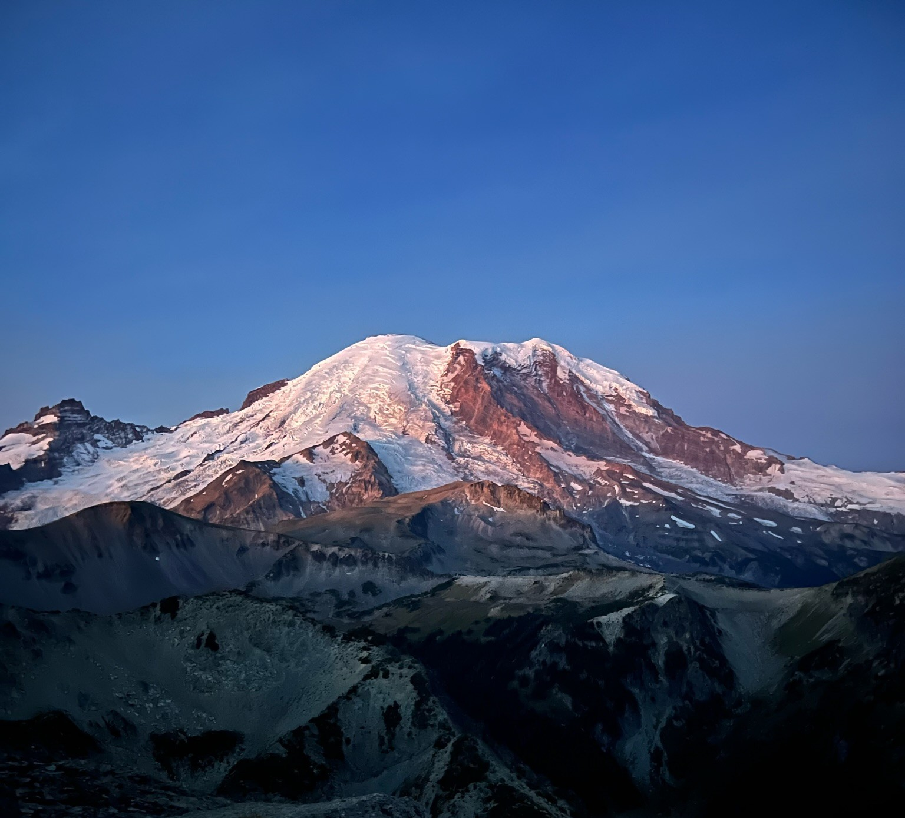

Welcome!
I am a researcher and programmer with a background in behavioral science and risk assessment. I have Bachelors degrees in Economics and Spanish and a Masters degree in Data Science. I hope that this website provides opportunities to connect with people that share any of my interests. The projects I upload reflect my curiousity and expertise in a variety of disciplines:
- machine learning and natural language processing
- environmental health and ecological sciences
- economic and political science
- food distribution and security (really all things food -- hit me with your best recipes too)
- game theory and strategic analysis
- technical writing and the dissemination of scientific materials
Feel free to browse around and see what I’ve been up to! Shoot me a message if you have questions or just want to chat. My contact info is in the footer bar below. Cheers!
